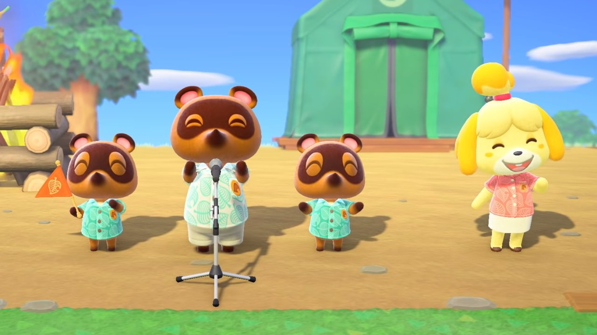

Welcome to Animal Crossing New Horizons
Nook Inc. invites you to create your personal island paradise on a deserted island brimming with possibility.
In the Animal Crossing™: New Horizons game, time moves along just like in real life. This means that seasons will change, different bugs and fish may hang out on your island, and some fun events are on the horizon. Whether you experienced these events last year or will experience them for the first time this year, here’s a rundown of what’s happening in the next couple months.
May Day (April 29 - May 7): Use your May Day Ticket and tour a rather interesting island between April 29 - May 7. These tickets are single-use, so plan your trip accordingly. Have a good flight!
International Museum Day (May 18 - May 31): To celebrate International Museum Day, players can take part in a Stamp Rally between May 18-31. After talking to Blathers and receiving a special stamp card, players can enjoy viewing fish, insects, fossils, and art while collecting stamps at the various museum exhibits.
